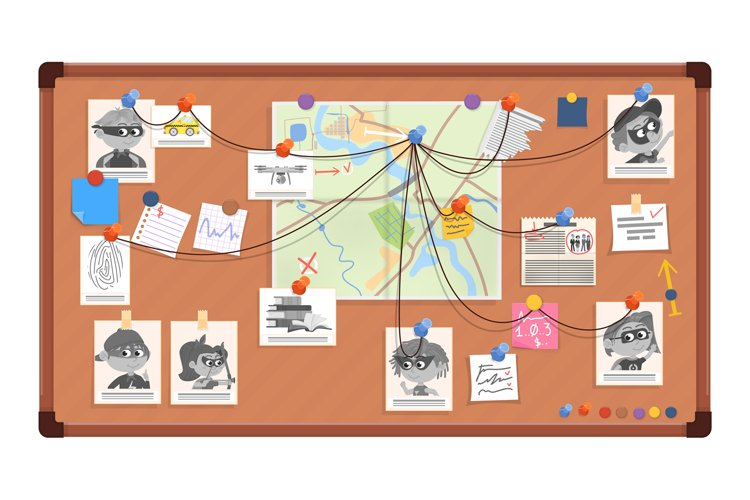
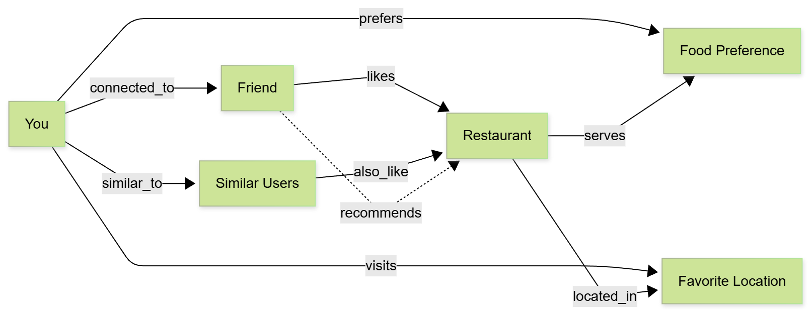
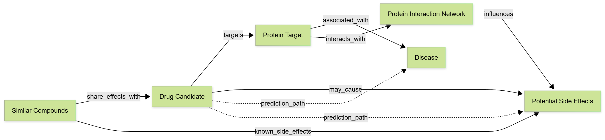

Connecting the Dots in Your Data
Imagine a detective board covered with photographs, news articles, and notes, all connected by thumbtacks and yarn. At a glance, you can see the power of connecting the dots and understanding relationships. Now imagine applying a mathematical engine that can query these relationships, traverse paths, and discover patterns. That is exactly what a graph database does.
Graph databases take the visual intuition of a detective board and make it queryable, scalable, and powerful for data analysis.
A graph database is a database designed specifically to store and query relationships between data. Unlike traditional databases that focus on individual records, graph databases excel at answering questions about connections, paths, and patterns across your data.
Every graph database consists of three fundamental elements:
Nodes represent the entities in your data. In a social network, nodes might be people or pages. In a knowledge graph of database concepts, nodes represent individual topics like Primary Key, Normalization, or SQL Joins.
Each node can store rich data. For a database concept node, this might include difficulty level, chapter number, or whether examples are available.

Edges represent the relationships between nodes. These relationships can have direction and type. For example, in a knowledge graph of database concepts:
Edges can also have properties. You might store the strength of a relationship, the year it was established, or the number of times two entities interact.
Relational databases excel at processing transactions and building deterministic analytics. Their strict constraints make them ideal for structured data and ACID compliance. However, these same constraints make it complex to answer questions about distant relationships.
Imagine you have all university professor and student data ever gathered. You want to know the relationship between a group of 10 students from completely different universities.
At first glance, since the students did not attend the same universities, they appear unconnected. But if you examine their professors, who themselves attended universities as students, you might discover they all shared a common professor generations back.
In a relational database, this query requires multiple complex joins across many tables. In a graph database, you simply traverse the relationships.
| Aspect | Relational Database | Graph Database |
|---|---|---|
| Structure | Tables with rows and columns | Nodes connected by edges |
| Relationships | Foreign keys and joins | Direct edges with properties |
| Best For | Transactions, structured data | Connected data, pattern discovery |
| Query Complexity | Simple for direct queries, complex for deep relationships | Simple for relationship traversal |
| Schema | Fixed, predefined | Flexible, evolving |
A knowledge graph is a specific type of graph database that organizes information to highlight connections and interactions. Think of it as a map of data where you can easily see how everything is connected and perform mathematical operations across different parts of the map.
Knowledge graphs make it possible to uncover insights and discover patterns that are not immediately obvious in traditional databases or spreadsheets.
Social media platforms use knowledge graphs to map your connections and interests. If your friend loves a particular restaurant, the platform might recommend that same restaurant to you based on:
The knowledge graph reveals these multi-hop connections that would be difficult to query in a traditional database.
In pharmaceutical research, knowledge graphs help scientists manage and analyze vast amounts of biological data. They can predict how a new drug might interact with proteins in the body by:
This potentially saves significant time and resources in the research process.
Once you have built a knowledge graph, you can perform powerful mathematical operations to extract insights:
Find the shortest path between two nodes. In a knowledge graph of database concepts, this answers: "What is the fastest learning path from SQL basics to advanced normalization?"
Identify the most important or influential nodes. Which database concepts are most central to understanding the entire subject? Which concepts connect the most other concepts?
Discover clusters of related nodes. Which database concepts naturally group together? What are the major topic areas in your course?
Calculate similarities between nodes and predict new connections. If you understand certain concepts, what should you learn next? What concepts are similar to ones you already know?
In the upcoming lab, you will build a knowledge graph of database concepts using the 20 terms you identified in your homework. This graph will:
You will use AI to automatically extract relationships from your textbook, creating a graph-database-backed RAG system that serves as your personal back-of-the-book index.
One challenge in the graph database ecosystem is that vendors often have their own query languages. Unlike SQL, which is standardized across relational databases, graph databases lack a universal query language. This is something the industry continues to work on.
Common graph query languages include:
Here is a simple Cypher query that finds all concepts you need to learn before understanding BCNF (up to 4 steps away):
MATCH (a:Concept {name:"Primary Key"})-[:PREREQ_FOR*1..4]->(b:Concept)
RETURN b.name
This query instantly shows the power of graph traversal. The *1..4 syntax means "follow the PREREQ_FOR relationship 1 to 4 times," discovering multi-hop learning paths in a single line.
In our lab, we will use a different approach: representing graph relationships as metadata in a vector database. Qdrant (and most vector databases now) support explicit parent-child links and payload filtering so we get true graph traversal on top of semantic search without learning yet another query language. This allows us to use standard filtering operations while maintaining the power of graph traversal.
Graph databases are powerful tools for exploration and pattern discovery, but they come with considerations:
Graph databases are not replacements for relational databases. Instead, they are complementary tools in a larger data management landscape. Data science teams often use graph databases to test inferences and discover relationships. When these relationships prove relevant, they are integrated into the data warehouse, closing the loop between exploratory data science and structured data integration.
One powerful feature of knowledge graphs is the ability to easily add new types of relationships among the data. As you learn more about your domain, you can extend the graph with new edge types, new properties, and new nodes without restructuring the entire database.
You can also extrapolate from existing data to infer and validate new predictions, making knowledge graphs valuable for both understanding current knowledge and discovering new insights.
In the next lab session, you will:
This combines the power of graph databases (relationship traversal) with vector databases (semantic search) to create a tool that is greater than the sum of its parts.
| Concept | Definition |
|---|---|
| Graph Database | A database designed to store and query relationships between data |
| Node | An entity or record in the graph (person, concept, product) |
| Edge | A relationship between nodes with optional direction and properties |
| Knowledge Graph | A graph that organizes information to highlight connections and enable insights |
| Traversal | Walking through the graph by following edges to discover paths and patterns |
You are now ready to build your own knowledge graph. In the lab notebook, you will use Python libraries to create, visualize, and query graphs, gaining hands-on experience with the concepts introduced here.
Remember: graph databases are about connecting the dots. Your 20 database concepts are the dots. The relationships between them are the connections. Together, they form a map of everything you have learned this semester.